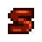

Archivo:Health FR.png

{kind=link}
No disponible a mayor resolución.
Health_FR.png (48 × 48 píxeles; tamaño de archivo: 264 bytes; tipo MIME: image/png)
Historial del archivo
Haz clic sobre una fecha y hora para ver el archivo tal como apareció en ese momento.
| Fecha y hora | Miniatura | Dimensiones | Usuario | Comentario | |
|---|---|---|---|---|---|
| actual | 11:30 1 mar 2019 | 48 × 48 (264 bytes) | Margotbean |
Usos del archivo
Hay más de 100 páginas que usan este archivo. La lista siguiente sólo muestra las primeras 100 páginas que usan este archivo. También puedes consultar la lista completa.
- Almuerzo de granjero
- Almuerzo de la suerte
- Anchoa
- Anguila
- Anguila frita
- Anguila picante
- Armas
- Arroz con leche
- Atún blanco
- Avellanas tostadas
- Bandeja de raíces
- Banquete de salmón
- Barbo
- Berenjena al parmesano
- Besugo
- Bocaditos de pimiento
- Bollito de arce
- Bollo extraño
- Botín otoñal
- Calabaza
- Calamares fritos
- Caldereta
- Caldo pálido
- Capricho de minero
- Carpa
- Chirivía
- Chucrut
- Cocina
- Coliflor gratinada
- Crema de almeja
- Crema de langosta
- Croquetas de patata
- Cultivos
- Desayuno inglés
- Dorado
- Dulce de grosellas
- Energía
- Ensalada
- Ensalada de rábanos
- Escargot
- Espagueti
- Estofado de judías
- Estofado vegetal
- Fabricación
- Fruta estelar
- Galletas
- Hamburguesa
- Helado
- Huevo
- Huevo XXL
- Huevo frito
- Huevo sombrío
- Invierno
- Macedonia
- Muffin de amapola
- Otoño
- Pan
- Pan con tomate
- Pastel de chocolate
- Pastel rosa
- Perca crujiente
- Pescado asado
- Pescados
- Pez fantasma
- Pez gato
- Pizza
- Plato de alta mar
- Plato rojo
- Primavera
- Pudin de ciruela
- Recolección
- Relleno
- Risotto de helecho
- Rollitos maki
- Salsa de alcachofa
- Salsa de grosellas
- Sashimi
- Setas salteadas
- Siluro
- Sofrito
- Sopa Tom Kha
- Sopa de alga
- Sopa de calabaza
- Sopa de chirivía
- Sopa de trucha
- Sorpresa de carpa
- Stardew Valley Wiki
- Supercomida
- Taco de pescado
- Tarta de arándanos
- Tarta de calabaza
- Tarta de moras
- Tarta de ruibarbo
- Tortas de cangrejo
- Tortilla
- Tortilla de maíz
- Tortitas
- Verano
- Árboles frutales
- Ñames glaseados
Mira más enlaces a este archivo.